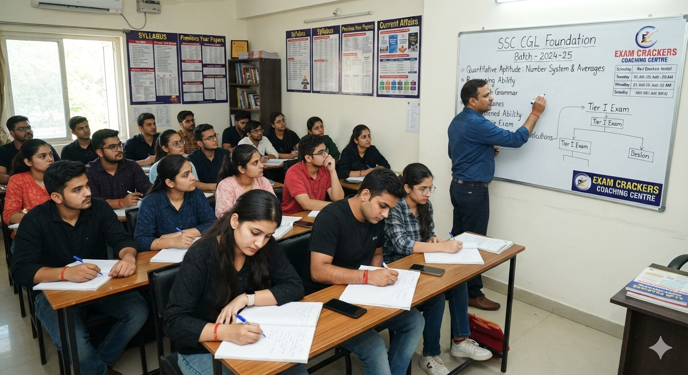

SSC
SSC CGL Complete Preparation
Quantitative Aptitude, Reasoning, English and General Awareness.
Explore courseStructured courses, expert-led learning, daily challenges and exam-style mock tests—everything you need to prepare for SSC, Banking, Railways and more.
Start with your exam and discover preparation designed around its syllabus, question format, and revision needs.
Explore exam-focused programs with concept lessons, practice questions, and revision milestones.

Quantitative Aptitude, Reasoning, English and General Awareness.
Explore courseBuild speed and accuracy with banking-focused lessons and timed practice.
Explore courseExam-pattern practice, topic revision, and assessment for railway exams.
Explore coursePreparation works better when you know what comes next. Move through a guided cycle designed around your goals.
Pick the exam that matches your ambition.
Cover concepts, revise notes and solve topic-wise questions.
Use mock tests and performance insights to focus your revision.
Build consistency through daily current challenges and a focused study plan.
Keep current affairs fresh with quick quizzes and short revision sessions. Return daily to strengthen recall.
SAMPLE QUESTION · GENERAL AWARENESS
Select an answer to check your understanding.
A balanced routine that keeps learning, practice and review in motion.
Attempt timed mock tests, review your accuracy and understand the topics that need more attention before the actual exam.
Find support from instructors, resources and a learning dashboard designed to keep your preparation organised.
Explore how preparation plans, mock tests and revisions fit together in a consistent learning journey. Student portraits on this demo are illustrative; verified selection results must be provided before publication.
Explore student journeys